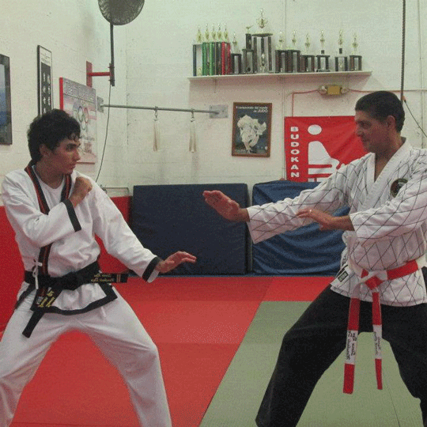

From a young age I showed signs of hyperactivity, and in order to harness that energy in a more constructive manner, I was placed in Taekwondo at age 5. For 3 years I trained vigorously and managed to receive my black belt soon after my 8th birthday. Taekwondo wasn't suiting my personality much at this point (nor could I really afford it), so I had to cease my training for a while. A little over a year later one of my childhood friends invited me to his karate school and that is still where I call my dojo today. Marubashi Dojo, the name given to the new school where I grew into an adult. For the last decade I've been mastering the art of Shorin Ryu, soaring through the ranks to the point where 4 years ago I became a head instructor, even earning my own key to the dojo. Since I've moved to Gainesville, I can no longer train at my dojo, but I still continue my training and keep myself in shape so that whenever I return to Miami, I am able to keep up with my students and teachers.

Since I moved to Gainesville, my Cuban blood has been surging stronger than it ever has before. Being separated from what used to be a constant Hispanic influence sparked something within me. Shortly after realizing this I joined the Gator Salsa Club at the University of Florida, and this has successfully satisfied my cravings for all that is Latin. I have since become Vice President of GSC and one of the main instructors for the lessons we offer weekly. I've become very involved in Gainesville's Hispanic community, becoming a liason between the Gator Salsa Club and various other Latin groups, such as Ritmo y Sabor. Salsa has become such an important part of my life, diffusing into almost every aspect of my daily activities. I listen to salsa when I do work, I dance while I cook - All I can say is "
League of Legends has become the fastest growing computer game in the world, becoming the face of the rising eSports scene. I have been playing since beta and I have quickly been growing through the ranks. The game takes 10 players, distributes them into 2 teams, and forces them into a battle that can last upwards of 45 minutes per game. A more detailed explanation of the game can be found on my blog below!
I occassionally stream myself playing the game, in which viewers watch the game from my perspective. Providing humourous and instructional commentary, expect to see me stream live every weekend!